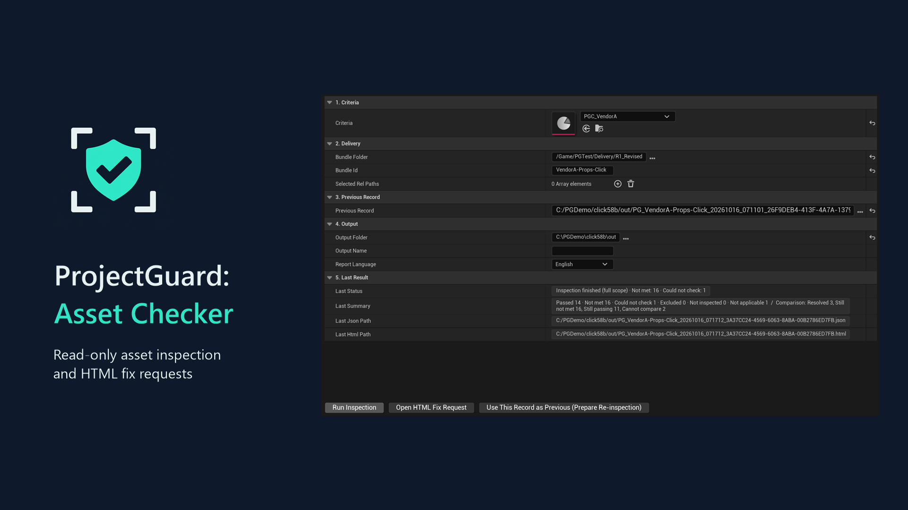
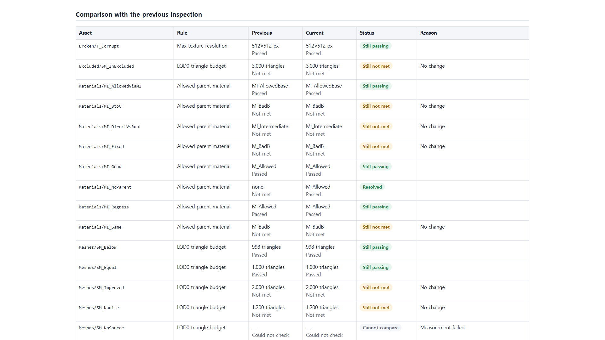
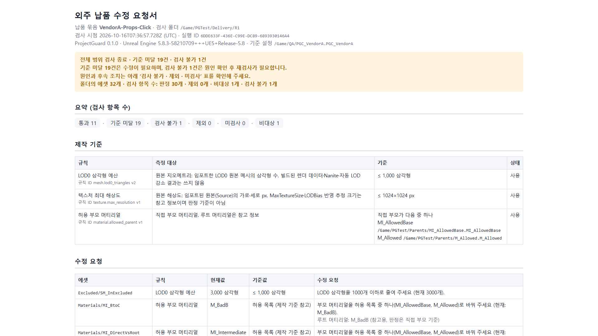

4.2→0.89GB
에셋 2,500개 검사 메모리 증가
검사가 불러온 패키지가 해제되지 않고 쌓이던 것을, 이번 검사가 불러온 것만 100개마다 해제해 줄였습니다.
CORE · ReleaseLoadedPackagesUnreal Engine Plugin · Fab 제출 · 1인
심사에서 떨어진 이유를 재현하고,
고쳐서 Pass로 바꿉니다.
외주에서 납품받은 3D 에셋을 Unreal 에디터 안에서 읽기 전용으로 검사하고, 기준 미달 항목을 HTML 수정 요청서로 만들어 주는 플러그인입니다. Epic Games의 Fab 기술 심사를 두 번 받으며, 심사 환경에서만 나는 빌드 오류와 심사자의 사용성 지적을 직접 해결했습니다.

검사가 불러온 패키지가 해제되지 않고 쌓이던 것을, 이번 검사가 불러온 것만 100개마다 해제해 줄였습니다.
CORE · ReleaseLoadedPackages내 PC에서는 되고 심사 환경에서만 나던 UE 5.8 컴파일 오류를, 재현 실험과 지원팀 문의로 원인을 좁혀 해결했습니다.
FAB TRC · 2차 심사"어디서 만드는지 모르겠다"는 심사 지적에 창 버튼·Tools 메뉴·Add 메뉴 세 곳을 만들었습니다.
EDITOR · CriteriaFactory대규모 합성 프로젝트로 측정했고, 보고서 생성은 0.04초였습니다.
PGScale58 · 측정사용자에게 가는 ZIP을 새 폴더에 풀어 빌드·설치·검사까지 자동으로 확인했습니다.
RELEASE · RC5읽기 전용 도구라는 약속을 지키는지, 검사 대상 원본 파일 해시가 그대로인지 확인했습니다.
TEST · 원본 해시외주 납품 에셋 검사 · HTML 수정 요청서
외주에서 받은 소품·배경 에셋이 기준에 맞는지 일일이 열어 보는 일을 줄이기 위해 만들었습니다. 기준(삼각형 수, 텍스처 해상도, 허용 부모 머티리얼)을 데이터 에셋 하나로 정하면, 납품 폴더를 검사해 JSON 기록과 영어·한국어 HTML 수정 요청서를 만들고, 재납품 때는 이전 기록과 비교해 해결·유지·악화를 보여 줍니다.


에디터 도구, 런타임 퀘스트 시스템, LLM 연동 세 시안을 쓰고 Codex에 교차 리뷰를 맡겼습니다. 리뷰는 "AI로 쓸 코드량과 돈 받고 지원할 제품의 검증량을 혼동했다"고 지적했고, 그 지적대로 범위를 크게 줄였습니다.
멀티플레이 위조·재접속·세이브 설계 난도가 과소평가됨
외부 API 비용·정책 위험, 검증이 가장 어려움
삭제·자동 수정은 빼고 "읽기 전용 검사 + 수정 요청서"로
검사 후 원본 82개 해시 변화 0
판정 규칙은 에디터 UI 없이도 돌아가는 Core 모듈에 두어, 에디터 창과 명령줄 커맨드렛이 같은 판정을 씁니다. 결과는 JSON으로 남겨 다음 납품과 비교할 수 있게 했습니다.
삼각형 수 · 텍스처 해상도 · 허용 부모 머티리얼
불러온 패키지만 100개마다 해제, 판정 불가 분리
실행 ID별 파일, 이전 기록과 비교
영어·한국어, 해결·유지·악화·새 위반
한 AI의 착각이 그대로 정답이 되지 않도록, 구현 전에 Claude와 Codex가 테스트 시나리오의 기대 결과를 각각 따로 쓰게 하고 다른 부분부터 사람이 판단했습니다.
Claude와 Codex가 기대 결과 JSON을 따로 작성하고, 차이를 대조 문서로 정리한 뒤 구현했습니다.
수정 전 코드로 테스트가 실패하는 것을 먼저 확인하고 고쳤습니다.
Codex 1차 리뷰 7건 중 6건을 코드로 고쳤고, 리뷰가 실제 결함(경로 우회)을 찾아내기도 했습니다.
시제품·수정 회차·심사 대응 등 단계별 지시 14개를 파일로 남겨 같은 기준으로 반복했습니다.
Fab 1차 기술 심사에서 "플러그인이 오류 없이 빌드되는가" 항목이 실패했습니다. 오류 위치는 플러그인이 아니라 엔진 헤더였고, 내 PC의 UE 5.8.3에서는 정상 빌드였습니다.
짧은 경로, 다른 드라이브, 분산 빌드 끄기에서도 모두 통과했고, 공유 PCH 입력이 최소 플러그인과 같다는 것까지 확인했습니다. 재현 실험 근거를 정리해 Fab 지원팀에 문의했고 "Epic 환경에서도 실패" 답을 받았습니다. 두 모듈에 전용 PCH와 unity 빌드 끄기를 적용해 문제가 되는 공유 PCH 작업 자체를 없앴습니다.
UE 5.5.4·5.8.3 모두 엄격한 include, unity 끔, PCH 없음 빌드에서 오류 0·경고 0. 2차 심사에서 해당 항목이 Pass로 바뀌었습니다.
PCHUsage = PCHUsageMode.UseExplicitOrSharedPCHs; // 엔진 공유 PCH 대신 모듈 전용 PCH(엔진 헤더만), unity 끔: // 모든 소스 파일이 스스로 필요한 헤더를 포함하는지 검증된다 PrivatePCHHeaderFile = "Private/ProjectGuardCorePCH.h"; bUseUnity = false;
2차 심사에서 "모든 기능이 의도대로 동작하는가" 항목이 Fail. 심사 메모는 "not clear where to create this criteria asset" 였습니다.
README에는 "Criteria 에셋을 만드세요"라고만 있고 플러그인 안에 만드는 버튼이 없었습니다. 만든 사람은 알지만 처음 쓰는 사람은 길을 잃는 구조였습니다. 창 버튼, Tools 메뉴, 콘텐츠 브라우저 Add 메뉴 세 곳에 생성 진입점을 만들고, README를 엔진·언어별 메뉴 경로 표가 있는 7단계 Quick start로 바꿨습니다.
새 UI 테스트가 UE 5.8 한국어에서만 실패했는데, 원인은 기능이 아니라 테스트가 아래가 잘린 메뉴 행을 누른 것이었습니다. 행이 다 보일 때까지 스크롤하게 고친 뒤 5.5·5.8 × 프로젝트·엔진 설치 4가지 모두 실제 클릭으로 통과했습니다.
합성 2,500개 규모로 측정하니 메모리가 에셋당 약 1.7MB씩 늘어 4.2GB가 증가했습니다.
검사하면서 불러온 패키지가 해제되지 않는 상태(Standalone)로 남아 있었습니다. 이번 검사가 직접 불러온 패키지만 100개마다 해제하도록 했습니다. 사용자가 이미 열어 둔 에셋은 건드리지 않습니다.
2,500개 검사 7.9초, 메모리 증가 0.89GB, 보고서 생성 0.04초(618KB).
constexpr int32 ReleaseBatch = 100;
void ReleaseLoadedPackages(TArray<FName>& PackageNames)
{
for (const FName& Name : PackageNames)
{
if (UPackage* Package = FindPackage(nullptr, *Name.ToString()))
{
ForEachObjectWithPackage(Package, [](UObject* Object)
{ Object->ClearFlags(RF_Standalone); return true; });
}
}
PackageNames.Reset();
CollectGarbage(GARBAGE_COLLECTION_KEEPFLAGS);
}2차 납품 결과가 1차 기록 파일을 덮어써서, 2차끼리 비교하는 결과가 나왔습니다.
출력 파일 이름이 실행마다 같았습니다. 또 Codex 리뷰에서 경로에 //가 섞이면 "같은 파일인지" 검사를 우회할 수 있다는 문제가 추가로 발견됐습니다. 파일명에 실행 ID를 붙이고, 출력 경로를 정규화해 입력 기록과 같으면 저장을 거부하게 했습니다.
시나리오 S16, S16b, S16c로 고정해 다시 생기지 않게 했습니다.
LOD0은 600개지만 고해상도 원본이 5,000개인 메시가 "통과"로 나왔습니다.
LOD0 원본만 보고 판정하고 있었습니다. 관련 API 동작은 UE 5.5·5.8 엔진 소스로 직접 확인했습니다. 규칙 버전을 올려, 고해상도 원본이 있거나 LOD0 감소가 켜져 있으면 "판정 불가"로 따로 표시했습니다.
확실하지 않은 것을 통과로 처리하지 않는 쪽을 택했고, 해당 시나리오를 포함한 테스트가 통과합니다.
개발용 빌드 플래그가 항상 켜져 있어, 사용자에게 가는 빌드에도 테스트용 콘솔 변수가 들어갔습니다.
테스트 훅을 별도 빌드 플래그(PROJECTGUARD_TEST_HOOKS)로 분리했습니다.
릴리스 확인 스크립트가 배포본에 테스트 문자열이 0건인지 자동으로 검사합니다.
현재 상태: RC5·RC6 패키지를 만들었고 재제출 전 단계입니다. 소스 저장소는 비공개이며, 이 페이지의 코드는 설명을 위해 일부만 옮겼습니다.
Contact
떨어진 이유를 재현하고, 고쳐서 통과로 바꾸는 개발자 김현준입니다. 읽어 주셔서 감사합니다.